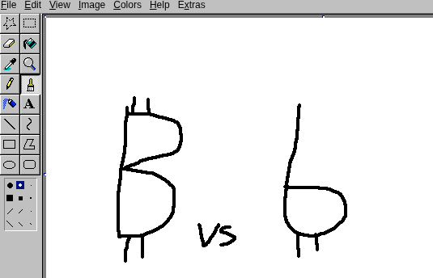

sats
Showing bitcoin quantities in sats is the right call.
It is clear, already spoken aloud in everyday conversation, and works on every device on earth today. The ₿ symbol already means bitcoin. Using it to mean its smallest unit, off by a factor of 100 million, is a mistake.
"Historically, bitcoin wallets have shown bitcoin quantities as long decimal quantities, which are effectively illegible to the human eye."
Agreed. Writing 0.00004356 is a bad experience. The answer is already here: just say 4,356 sats.
Include the comma. Don't change how people read numbers. No new symbol, no Unicode update, no font support required.
The placement convention already exists too: for whole-unit amounts, the symbol goes before the number (₿1.5). For sub-unit amounts, the word or symbol follows the integer, exactly like cents. 5,250 sats is already the right format.
"New users shouldn't need to learn a new concept to use bitcoin."
New users already have a sense that 1 bitcoin represents a large fiat amount. Telling them the smallest unit is called a sat, short for satoshi, is not a heavy lift.
Dollars have two names for denominations: dollars and cents. Nobody finds that confusing. Bitcoin having bitcoin and sats is exactly the same pattern, just with a different ratio.
What is a genuine burden is asking users to silently override their existing understanding that ₿ means bitcoin, and learn that in some contexts it now means a hundred-millionth of one.
"But the bigger problem by far is that approximately no one in the world today knows what 'sats' are. Poll your non-bitcoiner friends. Bitcoin yes. Satoshis no. This will probably be true for everyone you talk to."
This is true. And it completely misses the point.
Yes, non-bitcoiners don't know what sats are. But those same non-bitcoiners already know what bitcoin is: it's that expensive thing, the one that costs tens of thousands of dollars. That association is already in their heads.
So now consider the two paths:
The Spiral post says the sats approach "creates confusion and requires work to figure it all out", and offers the equation: "More learning = more friction = higher bounce rate = slower adoption." We agree with the equation completely. The disagreement is about which approach requires more learning.
Asking a non-bitcoiner to learn the word "sats" is one new piece of information. Asking them to accept that ₿, the symbol they already associate with a ~$100,000 asset, now sometimes means a fraction of a cent, is asking them to replace existing knowledge with something that contradicts it.
"Labeling quantities with ₿ is clean, simple and requires no new learning."
The ₿ symbol has entered the zeitgeist. When someone sees it, they think bitcoin, the whole unit. The ₿ symbol already has an established meaning.
Repurposing it to mean the smallest unit is not clean. It introduces an ambiguity off by a factor of 100,000,000. There will only ever be 21 million bitcoin. If ₿ starts meaning sats, you have changed the meaning of a bitcoin by that same factor.
The analogy is precise: it would be like repurposing the $ symbol to mean cents, when we already have a ¢ symbol. The comparison is not a stretch. It is exactly that.
Supporters of using ₿ for the smallest unit say: "when speaking verbally, call them whatever you want."
This creates genuine confusion. Reading "₿ 219,345" should produce one clear spoken form. Instead it allows all of these:
Those three phrases have wildly different meanings. "219,345 sats" is roughly the cost of a nice dinner. "219,345 bitcoin" is roughly the current entire float of a mid-size nation's treasury.
In dollar terms, the trading ticker USD is never used in everyday speech. Nobody says "I paid 12 USD for a burger." The ticker is for trading infrastructure, not daily conversation. The same applies to BTC. What we need is one word for the subunit that maps unambiguously to its written form. That word is sats.
In US currency: ¢ is to $ as sats is to ₿.
The dollar already has two names and two symbols for its denominations, and nobody finds this confusing after a lifetime of use.
What symbol eventually represents the sat is open. What is not open is using ₿ for it. Whether the community lands on the word sats, an abbreviation, or some future glyph, it cannot be the same symbol that already means the whole unit.
This is not an argument for the word "sats" specifically. It is an argument against using ₿ for the subunit.
The community can land on whatever it wants: the word sats, an abbreviation, the so-called kebab symbol, or something else entirely. All of those are fine. The constraint is narrow: don't use a symbol that already has a fixed, well-understood meaning.
₿ means bitcoin. One bitcoin is 100,000,000 sats. That is not a rounding difference or a matter of convention. Using the same symbol for both denominations would be like the US Mint printing "¢" on dollar bills because the cent symbol is already on-brand. The brands are related, but the units are not interchangeable.
To illustrate the general idea: a lowercase version of ₿, with the ticks at the bottom. Visually related, clearly subordinate, unambiguous. I am not an artist. A real proposal would look better than this.

A rough sketch, not a serious design proposal.
So: call them sats, use this symbol, invent something else, get the kebab symbol into Unicode. Any of those moves the conversation forward. Reassigning ₿ moves it backward.
"₿ IS ON-BRAND — adopting ₿ automatically inherits the bitcoin brand for prices, forevermore."
This is genuinely the strongest argument for their position. It is true that ₿ is on-brand. We should absolutely keep using ₿ for whole bitcoin amounts. Nobody is suggesting otherwise.
But "sats" is also already on-brand. It is already in use throughout the bitcoin community. It did not require a campaign. It spread organically because it is useful and unambiguous.
Getting people to say "sats" is a smaller undertaking than getting people to silently relearn that ₿ now means something a hundred million times smaller than they thought. One of these is the path of least resistance. It is sats.
AI agents trained on recent data may have already picked up the ₿-for-sats convention from sites promoting it. If yours has, you can correct it.
Point your agent at the sats-units skill to get it using the right convention: sats for subunit amounts, ₿ for whole bitcoin, and never the two confused.
How to use it
Paste this URL into your agent's system prompt or memory:
https://justsaysats.org/skill.md
Or copy the raw contents of skill.md directly into your agent's instructions.